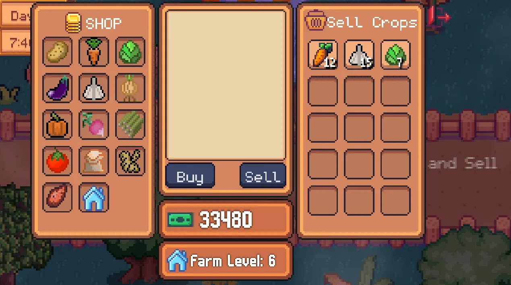
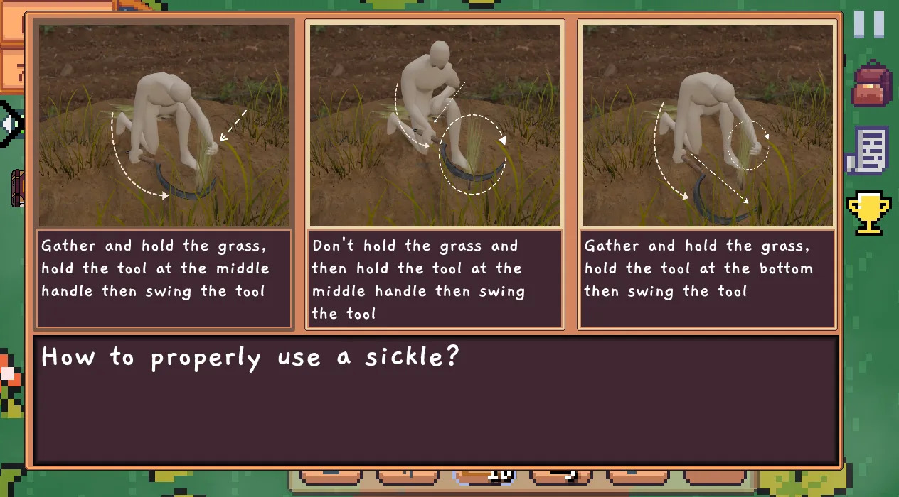

Game Overview
Harvest Adventures is a 2D top-down game that teaches you about various tools used in agricultural crop production. Engage in exciting minigames, answer questions, and manage your farm while learning valuable skills!
Key Features
- Learn about different agricultural tools and their proper usage
- Engage in multiple-choice questions and 4-pics-1-word style minigames
- Manage farm waste and create organic fertilizer
- Increase crop yields through proper farming techniques
- Progress through levels and unlock new tools and crops
Educational Value
Harvest Adventures combines fun gameplay with valuable agricultural knowledge. Learn how to properly use tools like sickles, manage organic waste, and understand the importance of sustainable farming practices.
Get Started
Ready to start your farming adventure? Download Harvest Adventures now and begin your journey to becoming a master farmer!
🚀 Download Now